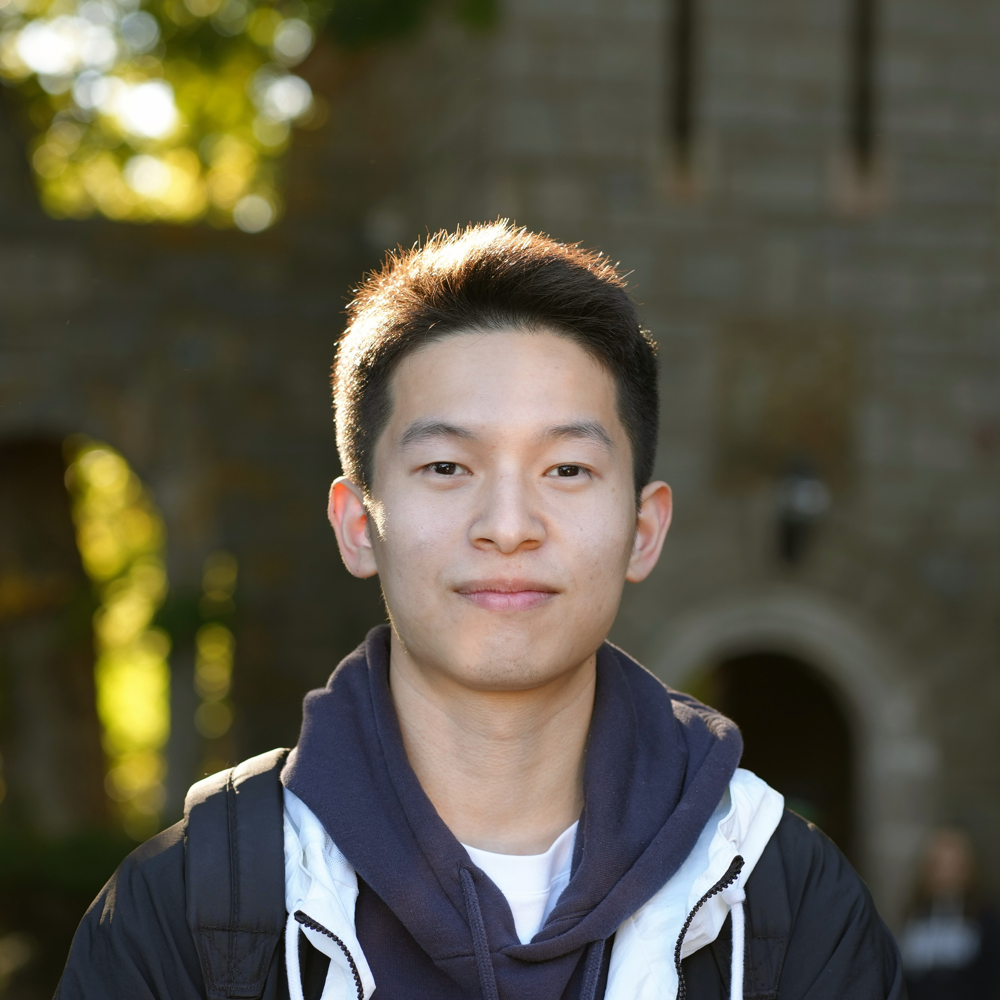
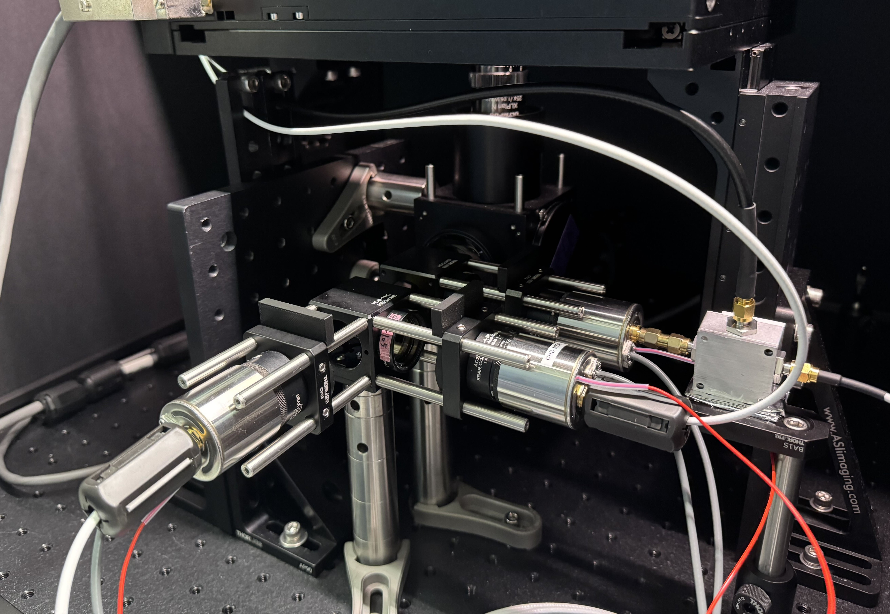
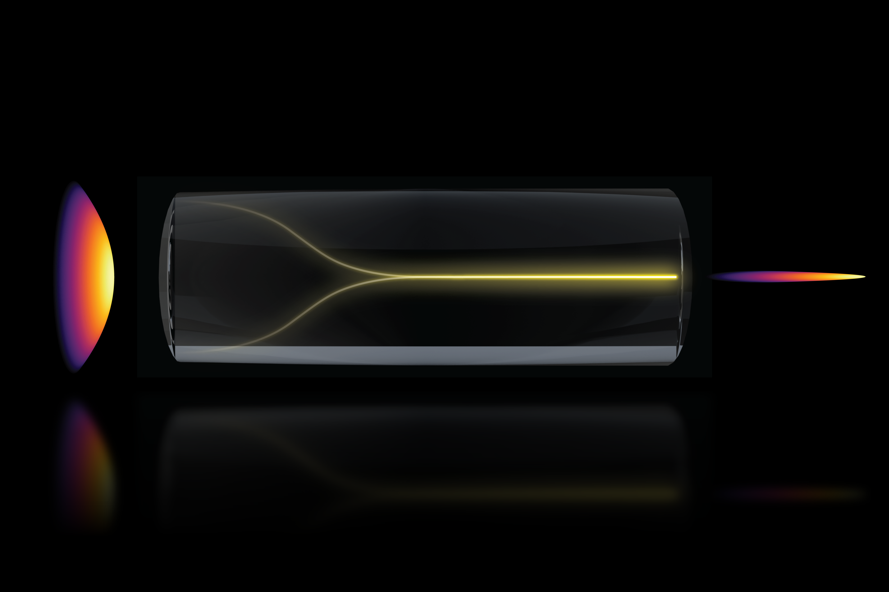
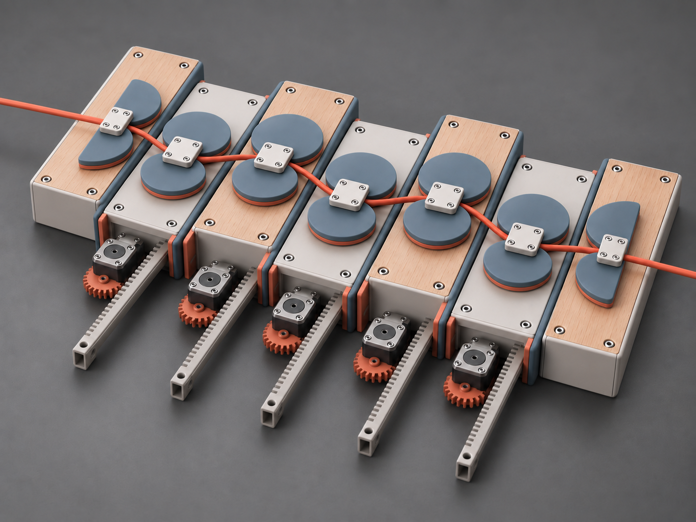

Honghao Cao
I am a PhD candidate at MIT working at the intersection of optics, imaging systems, precision instrumentation, and machine learning. My research spans end-to-end instrument development — from optical architecture and high-speed electronics to synchronized control, computational reconstruction, and AI-based image analysis.
I am particularly interested in building robust visual and optical perception systems where hardware, sensing physics, and algorithms are designed together. My interests include camera and imaging systems, optical sensing, AR/VR, robotics perception, and AI for scientific instrumentation.
My recent work includes a high-speed three-photon fluorescence-lifetime microscope, a high-throughput volumetric imaging system, and programmable ultrafast optical hardware for spectral, temporal, and spatial light-field control.
Research

High-Speed Three-Photon Fluorescence Lifetime Microscope
End-to-end microscope with a 5 GS/s analog sampling rate, single-shot lifetime imaging, and single-photon detection sensitivity.

High-Throughput Imaging System
A nonlinear pencil beam extending depth of focus by more than 10× and reducing volumetric acquisition from 25 minutes to 1 minute.

Adaptive Ultrafast Optical System
Programmable spectral, temporal, and spatial light-field control across two optical octaves, enabling up to 15× higher nonlinear imaging signal.
News
- May 2026Our work Self-localized ultrafast pencil beam for volumetric multiphoton imaging appeared in Nature Methods and was featured on the May 2026 journal cover.
- Apr 2026Our pencil-beam imaging research was featured in MIT News.
- 2026Received the MIT HEALS Graduate Fellowship.
- 2025Received the Helen Carr Peake and William T. Peake Memorial Research Prize.
- Dec 2024Our deep metabolic imaging research was featured in MIT News.
- 2024Our work on spectral-temporal-spatial customization of nonlinear multimodal pulse propagation appeared in Nature Communications.
- 2024Received the SPIE Photonics West BOIS Best Poster Award.
- 2024Received the MathWorks Fellowship.
- 2022Received the MIT Kailath Fellowship.